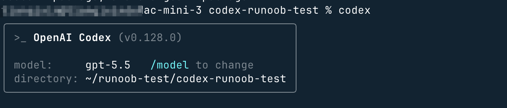

Codex 基礎入門
Codex を起動
Codex のインターフェースは標準的な3カラム構造です。左側はタスクリスト、中央は会話ウィンドウ、右側は多機能エリアです。

Codex アプリを起動すると、左側のメニューでプロジェクトを追加でき、中央の入力欄に要件を入力できます：

モデルの設定やファイルのアップロードなどができます：

Codex CLI を起動
アカウントのインストールと設定が完了したら、プロジェクトディレクトリでターミナルを開き、入力しますcodexするとインタラクティブなインターフェースが起動します：
# 进入你的项目目录 cd ~/my-project # 启动 Codex 交互界面 codex # 带初始提示词直接启动 codex "帮我分析这个项目的结构" # 启动时指定模型 codex --model gpt-5
💡 プロジェクトのルートディレクトリで Codex を起動することをお勧めします。これにより、プロジェクトのファイル構造を完全に読み取ることができます。
Codex のインターフェースは非常にシンプルで、カーソルがある場所が入力欄です。そのまま要件を入力してください。
例えば、ディレクトリに移動しますcodex-runoob-test次に、次のコマンドを使用してcodex起動します：
cd codex-runoob-test # 启动 Codex 交互界面 codex

その後、インタラクティブなインターフェースで直接要件を入力できます。例えば、test.py ファイルのコードを説明してもらうと、次のような結果が得られます（これらの記録は Codex App にも表示されます）：

3つの承認モード（Approval Mode）
Codex CLI は、3つの異なるレベルの操作権限モードを提供します。タスクの要件に応じて適切なモードを選択できます：
| モード | 説明 | 適用シーン |
|---|---|---|
ask（デフォルト） |
読み取り専用モード：ファイルの読み取りや計画の立案ができますが、操作を実行する前に毎回確認が必要です | 未知のコードベースの調査、リスク評価 |
auto-edit |
自動編集：現在のディレクトリのファイルの読み取りと修正ができますが、ネットワーク操作は確認が必要です | 日常的なコード開発、リファクタリングタスク |
full-auto |
完全自動：ネットワークが無効なサンドボックス内で全自動で実行され、確認は不要です | バッチタスク、CI/CD 自動化 |
# 指定审批模式启动 codex --approval-mode ask # 默认只读模式 codex --approval-mode auto-edit # 自动编辑模式（缩写 -a auto-edit） codex --approval-mode full-auto # 完全自动模式 # 在交互界面中切换 /approvals # 输入此命令切换审批模式
初めての会話
例1：プロジェクト構造の分析
codex "分析这个项目的目录结构，告诉我主要文件的作用" # Codex 会自动读取文件，输出类似： # ✓ 读取 package.json # ✓ 扫描 src/ 目录（23 个文件） # 项目结构分析： # - src/index.ts：应用入口，初始化 Express 服务器 # - src/routes/：API 路由定义（共 5 个端点） # ...
例2：バグの修正
codex "我的 login 函数有 bug，用户登录后 token 没有正确保存，帮我找出问题并修复" # Codex 会： # 1. 读取相关文件 # 2. 分析代码逻辑 # 3. 提出修改方案 # 4. 等待你确认后执行修改
例3：新機能の生成
codex "给我的 Express 应用添加一个用户注册接口，需要验证邮箱格式，密码至少8位，并把用户信息存入数据库" # 传入图片上下文 codex -i design.png "按照这个设计图，实现对应的 React 组件"
画像入力
Codex CLI は画像をコンテキストとして入力できます。これは以下のようなシーンで特に役立ちます：
- エラー報告のスクリーンショットの分析
- UI デザイン図に基づくフロントエンドコードの生成
- アーキテクチャ図の解釈とそれに基づく機能の実装
# 方法一：命令行传入图片路径 codex -i screenshot.png "解释这个报错信息，并告诉我如何修复" # 方法二：传入多张图片 codex --image img1.png,img2.jpg "对比这两个界面的区别，实现图一的设计" # 方法三：在交互界面中粘贴图片（macOS） # 复制图片后，在 Codex 输入框中直接按 Cmd+V 粘贴 # 方法四：Shift + 拖拽图片到终端窗口その他の拡張
クリックしてノートを共有
<p style="font-size:14px;">ノートはこの記事の内容を拡張したものである必要があります！</p><br> <p style="font-size:12px;"><a href="../tougao.html" target="_blank">記事の投稿は、ここをクリックしてください</a></p> <p style="font-size:14px;"><a href="../w3cnote/runoob-user-test-intro.html" target="_blank">登録招待コードの取得方法</a></p> <h3 class="text-muted"><i class="fa fa-info-circle" aria-hidden="true"></i> ノートを共有する前に<a href=";.html" class="runoob-pop">ログイン</a>が必要です！</h3> <p><a href="../w3cnote/runoob-user-test-intro.html" target="_blank">登録招待コードの取得方法</a></p>